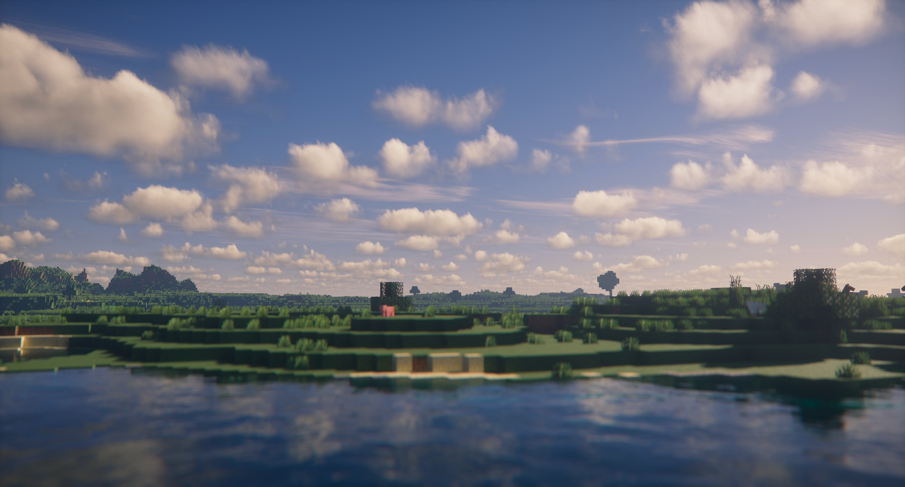

Llanuras (Plains)
Grandes extensiones de terreno plano cubiertas de hierba y flores. Son ideales para construir y suelen contener aldeas y animales como caballos, vacas y ovejas.
«Un terreno abierto y tranquilo. El lugar perfecto para establecer nuestro primer hogar».